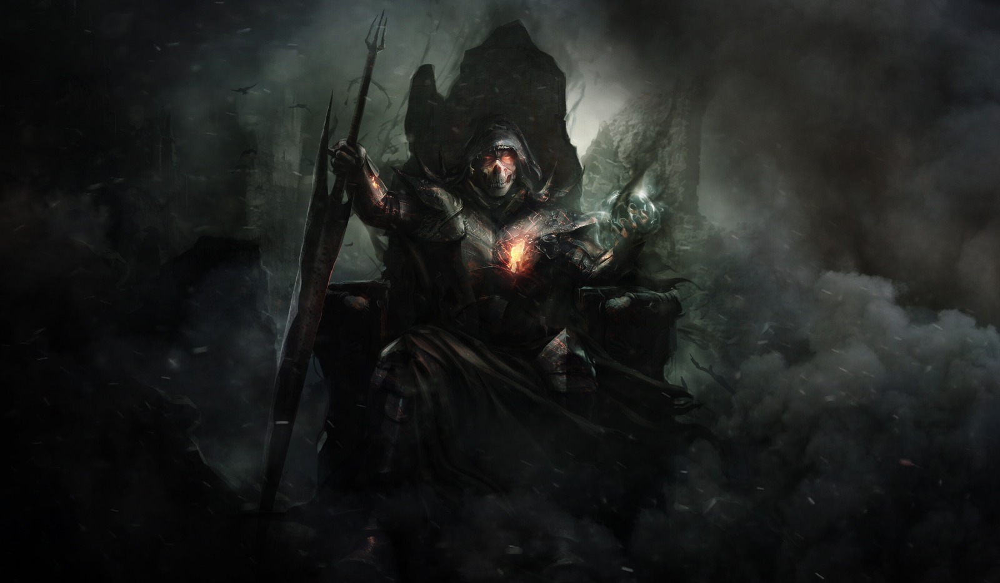

El juego
Hace tiempo inmemorial, se teje una leyenda que atraviesa los milenios en nuestro mundo. Se dice que cada mil años, emerge un ente enigmático y tenebroso conocido como Astaroth. Este ser tiene el don de hacer resonar las almas de la nueva generación de seres humanos, otorgándoles así poderes extraordinarios. Estos seres agraciados por este milagro, dedican sus vidas al arduo entrenamiento, con un destino singular: ascender a la torre de Astaroth y triunfar sobre él, asegurando su letargo por otro milenio.
